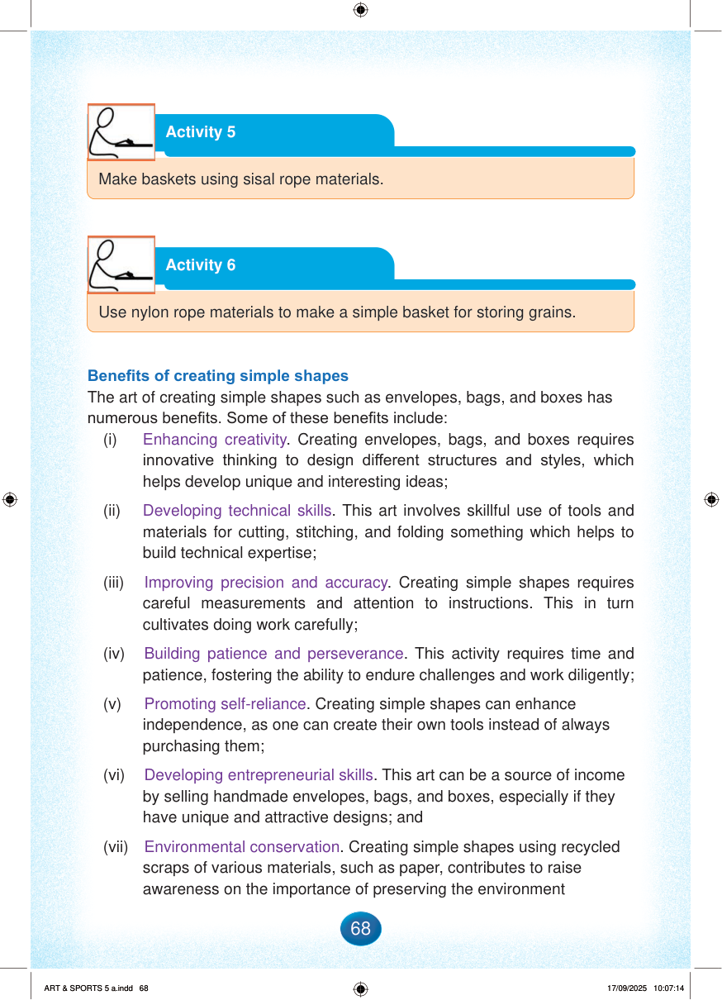

Activity 5
Make baskets using sisal rope materials.
Activity 6
Use nylon rope materials to make a simple basket for storing grains.
Benefits of creating simple shapes
The art of creating simple shapes such as envelopes, bags, and boxes has numerous benefits.
Some of these benefits include:
(i)
Enhancing creativity.
Creating envelopes, bags, and boxes requires innovative thinking to design different structures and styles, which helps develop unique and interesting ideas;
(ii)
Developing technical skills.
This art involves skillful use of tools and materials for cutting, stitching, and folding something which helps to build technical expertise;
(iii)
Improving precision and accuracy.
Creating simple shapes requires careful measurements and attention to instructions.
This in turn cultivates doing work carefully;
(iv)
Building patience and perseverance.
This activity requires time and patience, fostering the ability to endure challenges and work diligently;
(v)
Promoting self-reliance.
Creating simple shapes can enhance independence, as one can create their own tools instead of always purchasing them;
(vi)
Developing entrepreneurial skills.
This art can be a source of income by selling handmade envelopes, bags, and boxes, especially if they have unique and attractive designs; and
(vii)
Environmental conservation.
Creating simple shapes using recycled scraps of various materials, such as paper, contributes to raise awareness on the importance of preserving the environment